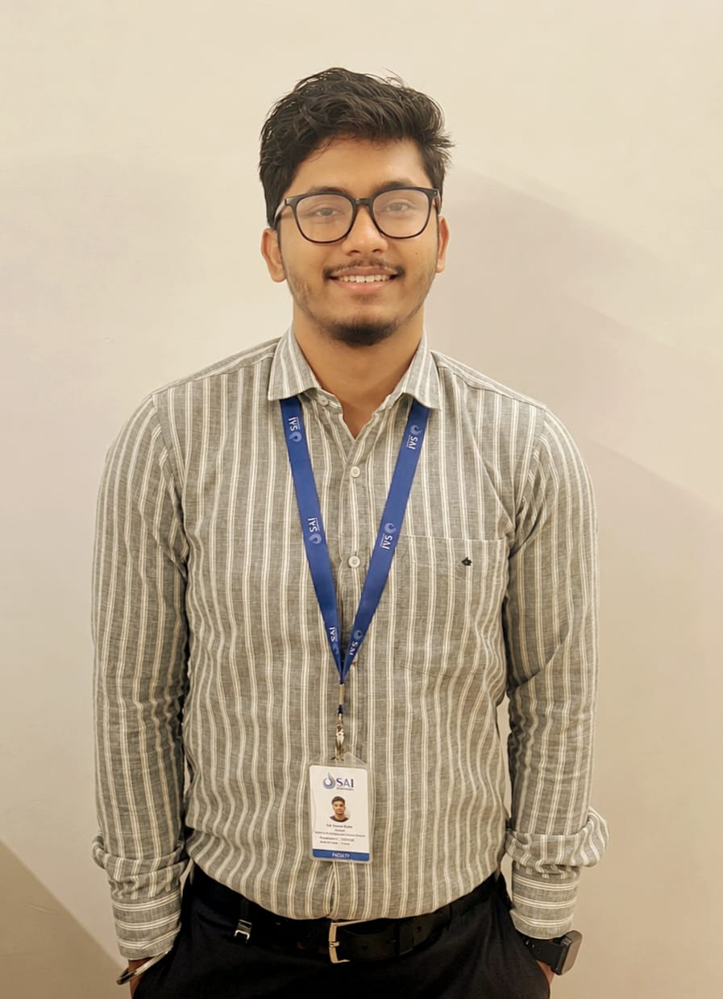

Teaching machines to see what clinicians look for.
Rupam Sah is a Lecturer of Computer Science and Engineering, working at the intersection of deep learning and medical image analysis - from lecture halls to CT scan segmentation pipelines.

Grounded in the classroom, driven by research.
Rupam Sah holds an M.Tech in Computer Science and Engineering from NIT Jalandhar, Punjab and a B.Tech from Tezpur University, Assam. He currently teaches and mentors undergraduate engineering students as a Lecturer in the Department of Computer Science and Engineering at Sai University, Chennai.
His research sits at the intersection of machine learning, deep learning and medical image analysis - most notably, building attention-driven neural architectures that improve how CT scans are segmented for downstream clinical use. His work on pancreas segmentation has been published in IEEE Xplore and Springer's Lecture Notes in Computer Science (LNCS) proceedings, and his more recent work extends into self-supervised learning and graph neural networks.
In the classroom, he delivers core undergraduate courses in programming and algorithm design, supervises laboratory sessions built around hands-on code execution, and contributes to curriculum design and departmental evaluation. Outside the lab and lecture hall, he has represented his department as a placement coordinator, served as a teaching assistant across two academic years during his education and led a university-wide student council body.
Reach out for collaboration or teaching inquiries →Where the work is focused.
Four connected threads - each one feeding the others, from raw pixels to real-world decisions.
Medical Image Analysis
Segmentation and detection pipelines for CT and other clinical imaging modalities, with a focus on structures - like the pancreas - that are small, irregularly shaped and easy for models to miss.
Deep Learning Architectures
Attention-gated and squeeze-and-excitation mechanisms layered onto U-Net-style encoders, aimed at sharpening feature representation without inflating model complexity.
Self-Supervised & Low-Resource Vision
Learning useful visual representations when labeled data is scarce - a constraint that shows up constantly in clinical and real-world computer vision settings.
Graph Neural Networks
Applying graph-based learning to real-time misinformation detection across social IoT networks - extending the same representation-learning instincts to a very different kind of graph.
AI-Driven Approach for Improved Pancreas Segmentation Using CT Images
Proposed ESAT U-Net, a deep learning framework designed to sharpen feature representation for the notoriously difficult task of pancreas segmentation in abdominal CT scans - a structure that occupies a tiny, irregular fraction of the abdominal cavity and varies significantly in shape between patients.
Integrated Squeeze-and-Excitation Enhancement Blocks with Attention-Gated Enhancement Blocks so the network learns to weight informative feature channels while gating out irrelevant background - helping it capture the fine-grained spatial dependencies that simpler encoder-decoder architectures tend to miss.
Benchmarked on the NIH Pancreas CT Dataset against MAEU-Net baselines.
vs. baseline MAEU-Net
Papers, published and accepted.
Peer-reviewed work spanning medical imaging, self-supervised learning and graph-based detection.
Where the teaching happens.
Lecturer, Department of Computer Science & Engineering
- Delivers lectures for undergraduate (B.Tech) engineering courses in Computer Science.
- Supervises practical laboratory sessions, with a focus on experiential learning and code execution.
- Mentors undergraduate students through their academic progression.
Assistant Professor, Department of Computer Science & Engineering
- Delivered lectures for core undergraduate (B.Tech) engineering courses in Computer Science.
- Supervised practical laboratory sessions, with a focus on experiential learning and code execution.
- Mentored undergraduate students through their academic progression.
- Contributed to curriculum refinement, departmental evaluation and academic administration.
Teaching Assistant
- Supported lab supervision across the M.Tech program.
- Assisted faculty with evaluation and student mentoring alongside thesis research.
Placement Representative, CSE
- Coordinated between the department and recruiters during the placement cycle.
Courses taught
Academic foundations.
M.Tech, Computer Science & Engineering
Thesis: AI-Driven Approach for Improved Pancreas Segmentation Using CT Images, advised by Dr. Renu Dhir.
B.Tech, Computer Science & Engineering
Served as Convenor of the Social Service Club under the Students Council during final years.
"Programming and algorithms are best understood by running them, breaking them, and running them again. I try to keep every lecture tied to something a student can execute, test and question in the same sitting."
Expertise in the classroom.
Core undergraduate subjects across programming and applied AI.
Tools of the trade.
Languages
Frameworks & Tools
Operating Systems
Beyond the research lab.
Student Result Analyzer
- Built an academic analytics pipeline using the MERN stack for real-time tracking of student milestones alongside clean report generation.
- Structured operational features to support institutional decision-making at scale.
- Designed interactive, custom UI visualization matrices so faculty could read outcomes at a glance rather than through raw tables.
GATE (CSE) Qualified
Data Analytics with Python
The Complete Web Development Bootcamp - Dr. Angela Yu
Placement Representative (CSE), NIT Jalandhar
Teaching Assistant, Department of CSE, NIT Jalandhar
Convenor, Social Service Club, Tezpur University Students Council
Let's talk research, teaching or collaboration.
Open to conversations on medical image analysis, collaborative research, guest lectures, or academic opportunities. The fastest way to reach me is email.
Email Rupam →